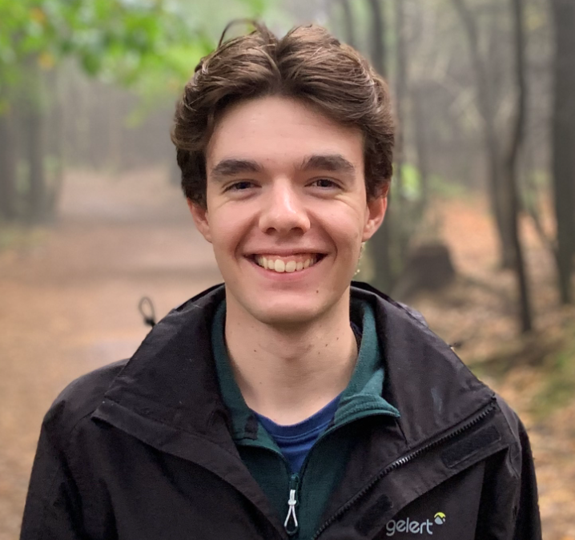
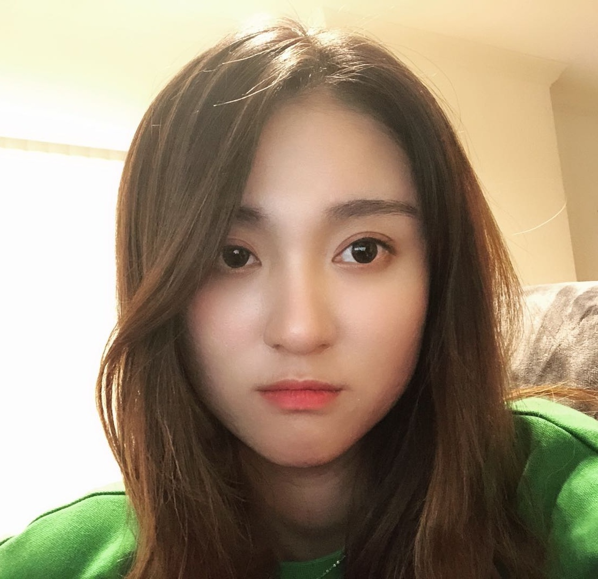

Members of the CC Lab
Faculty
Students
Kien Khuong
MSc in Data Science with AI
Interests: ML, NLP, Social Networks, Network Analysis, Computer Vision
Peilin Du
MSc in Data Science
Interests: Data Science, ML, NLP, Computational Social Science
Shubham Joshi
MSc in Data Science with AI
Camila Castel-Branco
MSc in Data Science with AI
Mohammad Ali Rahimi Fard Kashani
MSc in Advanced Computer Science with Business

Matt Hudson
BSc in Computer Science
Interests: Machine Learning, AI, Natural Language Processing
Ioan Wainwright
BSc in Computer Science and Mathematics
Alumni


Jiayi Xu
MSc in Applied Data Science and Statistics
Interests: NLP, narratives and framing, CORD-19